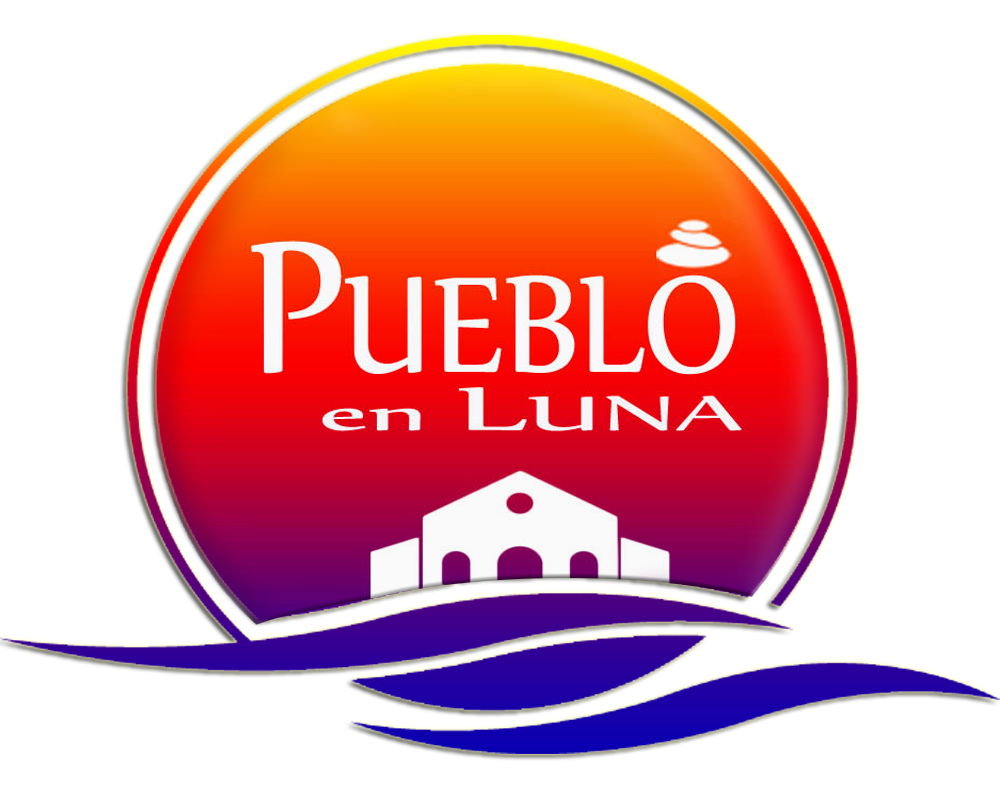

Located at the beautiful town of Luna overlooking the West Philippine Sea, Pueblo en Luna is as captivating as its magnificent milieu. In this Mexican-inspired dream destination in North Luzon,gorgeous colonial and colorful buildings. A beautiful scenery that takes you to Mexico’s famous town of Guanajuato, but without having to leave local shores.
A Taste of the Mexican Life Architectural themes influenced by the Guanajuato City in central Mexico characterize this resort, ushering the beginning of a lovely vacation.
